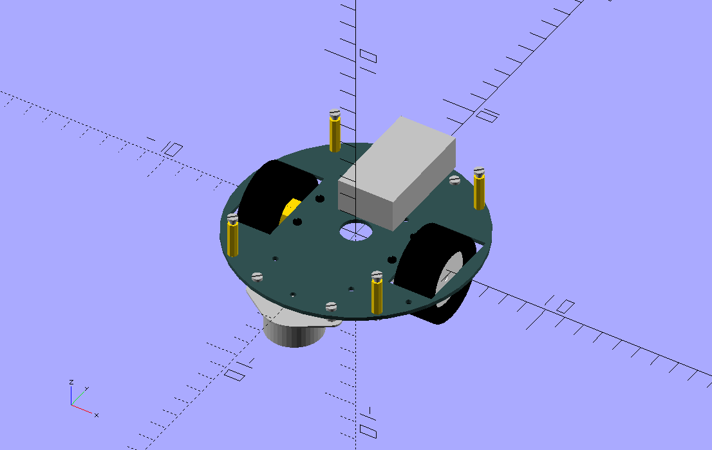
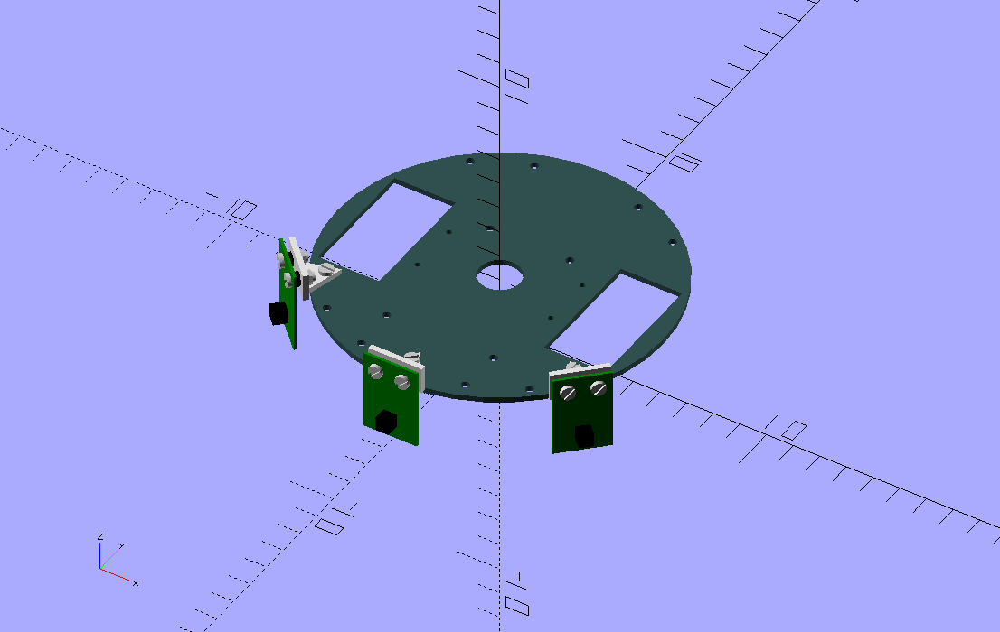
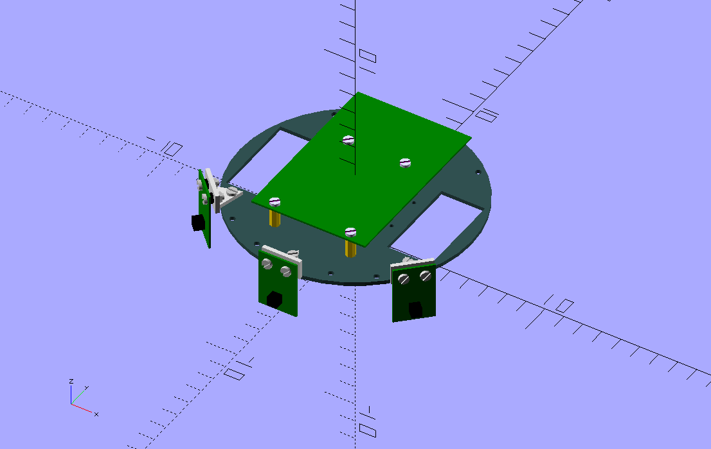
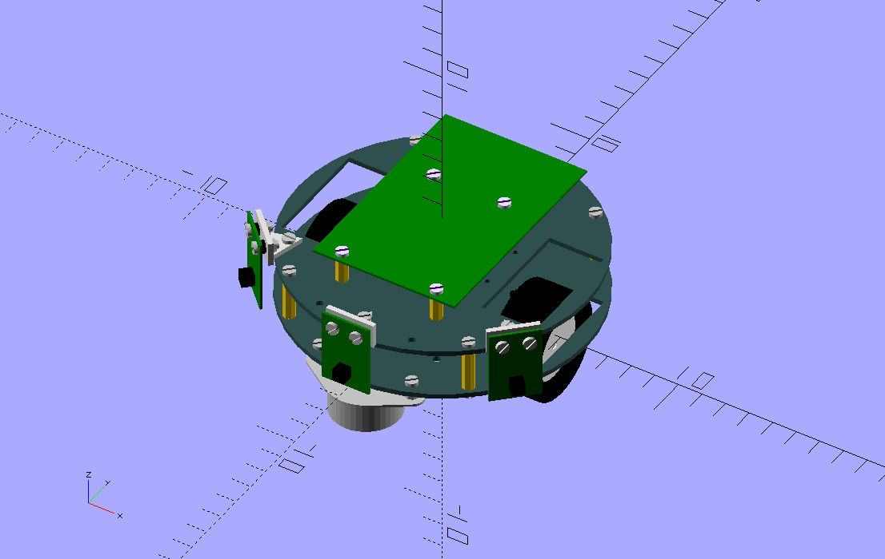
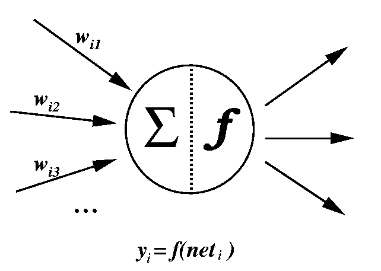
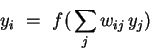
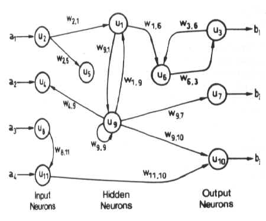
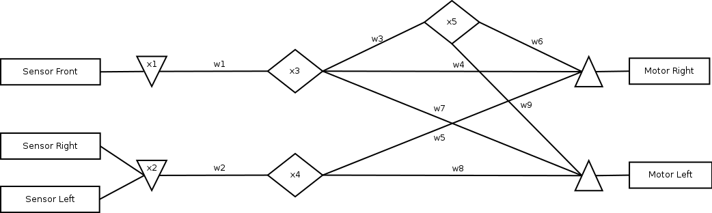

Artificial Neural Network meets ATTINY

Introduction
Gentlemen,
Welcome to my first instructable. It is a long time I follow this excellent site. I learn a lot from this community and I wish to return back the favor by publishing my own contribution.
I do apologize for the English as it is not my native language. Remarks are highly appreciated.
Since I discovered Intructables.com, I began to play with Arduino and robotic. From my educational background, I have some knowledge about Artificial Intelligence. So I thought it would be nice to put them together. Little by little, the idea to build a robot, based on some ATTINY processor and programmed using an Artificial Neural Network (ANN), began to blossom in my mind.
When people talks about Artificial Neural Network, one will usually think about some complex technologies which can learn by itself. True, ANN has this property to be trained but at the cost of computation power ATTINY doesn’t have. Yet a Fixed ANN (pre-trained) can be implemented on such tiny processors.
So here we are. I settled for an “Avoiding Collision Type” robot powered by a Fixed ANN. Later on, I planned to add a self-learning module using a Raspberry-Pi to train the ANN implemented here (Perhaps a next instructable?).
I want also try new skills like homemade double-sided PCB, improving conception and building techniques. I want also have a robot easy to program and easy to debug.
This instructable will be divided into 2 parts; 1) the building and the programming of the robot and 2) the theory of the Neuronal network and its implementation here. Everybody can build this little robot without the second part.
Step1: Requirements

Download the zip package containing all documents, sketches and libraries.
Software:
・ OpenSCAD
・ Fritzing
・ Arduino IDE
・ Inkskape (Optional)
Material for the robot:
・ (x2) Acrylic sheets
・ (x2) wheel
・ (x1) Caster roller
・ (x4) M3 spacer 18mm
・ (x4) M3 spacer 10mm
・ (x2) M3 spacer 4mm
・ (x3) L shaped support in metal or plastic
・ M3 screws and nuts
・ (x2) Motor N20 and support
・ (x1) BATTERY LIPO 7.2V
Electronics:
Motherboard:
・ (x1) ATTINY84A
・ (x1) H-Bridge L293D
・ (x1) Regulator 7805
・ (x1) Capacitor 100uF (16V)
・ (x1) Capacitor 1uf (16V)
・ (x1) Capacitor 100nf
・ (x1) Resistor 220O
・ (x1) Resistor 10KO
・ (x1) LED (I like blue J)
・ (x1) Micro switch (ON/OFF)
・ (x1) Micro Push Switch (RESET)
・ Wires
・ Several connectors
Sensor (x3):
・ (x1) Resistor 100KO
・ (x1) Resistor 220O
・ (x1) IR Emitter/Receiver
・ (x1) Servo type connector
Tools
・ Hot glue gun
・ Solder station
・ Screw drivers
・ Cutters
・ Pliers
Disclaimer and Safety:
Step1: Building the motherboard


The motherboard features a power regulator (5V) to power an ATTINY84A chip. This chip has a reset button and a programmer connector (J1) using the SPI protocol (SLT, MOSI, MISO, CLK). 3 pins (J2, J3, J4) are used as analog input, 2 pins (J5, J6) as digital inputs/outputs and the other pins are connected to a L293D to command two N20 motors. I invite you to search on Instructables.com about ATTINY. There are many instructable about how to use and to program them.
In the ZIP package, the Fritzing file contains the two layers of the PCB. The top layer contains only few connections with via. They can be replaced by some wires for who prefer to make a “one layer” PCB. I used the toner transfer method (again all instructables are your friend). To align the 2 layers, I drilled 2 via on each side of the PCB. With the help of 2 pins I sandwiched the PCB with glossy papers (one for the top layer (mirror), one for the bottom layer) and feed to a press machine. After etching, the result was very acceptable.
IMPORTANT: Triple check all the copper tracks and with a multi-meter checks for short circuits or discontinued track.
After soldering the via, I protected the top layer copper using a transparent protective spray. After soldering the components, I used the same spray to protect the bottom layer copper. I also used hot glue at the base of the wires to reinforce their mechanical strengths.
Use the third picture as reference to place the components. I put connectors for the motors (M1, M2), the sensors (J2, J3, J4), and the programmer (J1). They are 2 free connectors (J5, J6) that can be used for a daughter board or for debugging. These connectors were what I found in my workshop. Feel free to use whatever you have or solder the wires directly. The connector J2 to J6 use the same pin arrangements; the pin close to the ATTINY is the signal (SIG), the pin in the middle is 5V and the pin outside is the ground (GND). I soldered wires with a JST connector for the battery. Depending of your battery you may have to choose another connector.
In the ZIP package, I put some sketches to debug the motherboard and ensure the sensors and the motors are working. You will find more details how to use them in the later steps. I advise you to first try these sketches before to upload the neuronal network sketch. If the motors run in the wrong direction, just swap their wires (or change the digital pins in the sketches).
Step2: Building the sensors


You must build 3 of this sensor. The robot will use Infrared sensor to detect obstacles. Basically closer is the obstacles, lower is the voltage at the pins of the IR receiver. The voltage is at its highest when there is no obstacle. These sensors will be connected to 3 analog pins (A0, A1, A2) of the ATTINY.
This sensor is a single layer PCB and uses the same build process as the motherboard.
Step3: Building the robot







The base of the robot is built with acrylic sheets. I had these round plates in my workshop from a turtle robot kit. You can use the openSCAD files (in the ZIP package) to export the dimensions and use a laser cutter. Or you can buy a kit for a very low price.
After screwing the motors and the caster roller on the back on one plate, zip tie the battery on the top.
Screw the sensors and the motherboard on the top of the other plate. The sensors are attached to the plate using small L shaped support. I found those in my junk box.
Finally screw the 2 plates together. Pass the different wires through the hole in the middle of the plates below the motherboard. Attach the connectors and admire your work J.
Step4: Programming: Connect the programmer

The robot will be programmed using Arduino IDE. The ATTINY needs a programmer (USB-ASP) connected to your computer by a USB port and using the 10pins connector. Usually the programmer is plug-and-play and it is recognized by the Arduino IDE. The programmer port will appear in the option Port of the Tools menu. If not, please refer to the documentation of your programmer.
Before to upload sketches, please burn the autoloader by selecting the command in the Tools menu. When the autoloader is successfully burnt, you are ready to program your robot by compiling/uploading a sketch in one click.
In the picture, you can see I use the free pins (J5, J6) to connect a serial USB interface (TX, RX, GND). By using the SoftwareSerial library, I can use the monitor and the plotter for debugging. This is optional but I strongly advise to setup this interface if you want check the different components works or if you want play with the code.
IMPORTANT: Do not power on the robot when uploading a sketch. If you power on, the motor may start randomly and you may damage the power regulator.
Step5: Programming: Upload the test sketches
Before to upload the ANN sketch, please try the test sketches:
・ Frontsensorneuron: using the serial interface, you can visualize, using the plotter of Arduino IDE, the effect of the sensor when you put on obstacle (your hands) in front of the sensor.
・ Sidesensorneuron: using the serial interface, you can visualize, using the plotter of Arduino IDE, the effect of the sensors when you put on obstacle (your hands) in front of the sensors. This one visualize the difference between right and left sensors. If your hand is closer to the left or right sensor, the curve will move accordingly.
・ Motorneuron; it will turn the motor forward, backward, turn right and turn left. If the robot moves in other direction try to swap the wires or the connectors.
After connected the serial interface and the programmer, upload one sketch. Then turn on the robot. You should see numbers on monitor or a curve on the plotter. Please be sure to select the same speed as the sketches (9600bauds).
If all the debug sketches upload and work properly, you won’t have any trouble for the following step.
Step6: Calibration
The robot ANN needs a calibration before to be used. Open the “brain.ino” sketch. In the “config.h”, uncomment the “#define CALLIBRATE“. Be sure to power off the robot before to upload. Please watch the video and the pictures to perform the calibration.
Before the calibration, be sure to have no obstacles around the robot when you power on. When the first calibration is over, the robot will move forward a bit. Then it will calibrate the front sensor. The robot will move forward until it meet an obstacle. Here it will move forward and backward judging the distance. After it will calibrate the side sensors. It will turn right and adjust the balance between the sensor by turning left and right.
As you can see in the video and pictures, I use a rig of carton to build an enclosure to perform the calibration.
Step7: Here you go!
When the calibration is over, power off the robot. Comment the “#define CALLIBRATE“ in the “config.h” and upload the sketch again. Now the robot should move forward and avoid obstacles by its own.
Please have a look at the video to see the robot in action.
Congratulation if you have followed me so far. Let start for the theory.
Step9: A bit of theory
From Wikipedia, an Artificial Neuronal Network (ANN) is:
“In machine learning and cognitive science, artificial neural networks (ANNs) are a family of models inspired by biological neural networks (the central nervous systems of animals, in particular the brain) which are used to estimate or approximate functions that can depend on a large number of inputs and are generally unknown. Artificial neural networks are generally presented as systems of interconnected "neurons" which exchange messages between each other. The connections have numeric weights that can be tuned based on experience, making neural nets adaptive to inputs and capable of learning.”
Please refer to this articles that give a good overview of what is Artificial Neural Network:
・ http://www.willamette.edu/~gorr/classes/cs449/intro.html
・ http://www.doc.ic.ac.uk/~nd/surprise_96/journal/vol4/cs11/report.html
There is numerous models to build an ANN. Basically artificial neurons are little devices that function like a pump. When their input reach a certain level or potential threshold, they fire a message from their output to the neurons connected to them. The neurons are connected through axons/connections with a given weight. The value of the weight of each axon is computed through a training process. It is this weight that makes ANN able to self-learning.
One model is to define a neuron as following:

If a neuron receives inputs (y1, y2 … yn) from n input neurons, the neurons will first sum up the inputs multiplied by the weight of each axons:
Y1W1 + Y2W2 + Y3W3 + ... > T
If this sum is greater than a potential threshold T, the neuron is activated and will pass this sum to a transfer function f. This function will then calculate a new output than will become the input of other neurons.

This propagation will continue until to reach neurons without output connections.
Usually we distinguish 3 types of neurons:
・ Input neuron: A neuron that receive their input directly from a sensor, a typical “analogRead” on Arduino.
・ Hidden neuron: A neuron that transfer information
・ Output neuron: A neuron that send their output directly to an actuor, a typical “analogWrite” on Arduino.
For a given number of neurons (input, hidden and output), we can connect them through all possible connections, creating an ANN:

Ok, but why such thing can learn and produce a result?
Without going to deep in the math, the connection, the transfer function and potential threshold can be fixed. Then only weights between neurons need to be determined to solve a problem.
When we train an ANN, we provide the output for a given known input. By using some algorithms (Back Propagation is the most usual), we can calculate the variation of the weight based on the delta (mean square error) between the actual output and the provided output. These variations can be used to adjust the weights of each axon. More you give known output for given known input, more the neural network adjust the weights to give the correct output. The great result is an unknown input but similar to the one trained will trigger an output that is predicted and correct.
For example, if you train your ANN to recognize the letter scripted “t”, then an input of any “t” shaped drawing will be recognized as a “t”.
The other great result of ANN, if you have one ANN to recognize red objects and one to recognized the letter “t” then by adding the 2 ANN together, you have a new ANN that will recognize red ”t”. This property is used in deep learning. The process of recognition is sliced in different layers of specialized ANNs. By adding all this layer, you get an ANN who recognize very complex information.
Step10: Implementation
To implement an ANN, we need a network of neurons connected to our sensors and motors:

The down triangles are input neurons. The up triangles are output neurons. The parallelograms are hidden neurons.
We need a transfer function. I used a PID function. I like this function because it gives neurons the possibility to integrate and differentiate information as well as a linear behavior (typical neuron behavior). If you don’t know what is a PID function please refer to this link:
https://en.wikipedia.org/wiki/PID_controller
The PID function has been implemented as a library. This function is very useful in robotic when you want balance a machine given sensor inputs (Copter, self-balancing machine …) I implemented this library with few goodies to correct PID raw implementation; bound the integration, minimize integration errors, and a mechanism to stabilize the PID when the input is discontinuous. I also implemented a very basic auto tuner used to calibrate the PID functions. This auto tuner suppose the input to be “clean” by using some low pass filter. If you have a look to the input neurons, you can see a low pass filter on all the “analogRead”.
Our neurons will force the motors to move in order to balance the sensors; a perfect behavior for a moving machine.
And at last, we need to define our weights. Normally the weights are unknown and should be calculated through learning processes. ATTINY doesn’t have that power. An external computer can be used to feed the network with the weights. It is my next project.
For now, let build the weights manually. In this case it is not too hard. First we need to define several behaviors:
・ Behavior 1: Go forward and stop when encountered an obstacle in front of
・ Behavior 2: Turn left or right to avoid an obstacle on the side
・ Behavior 3: Escape if the robot is stuck (stop)
You will find in the sketch several configuration to test each of these behaviors; just comment/uncomment the behavior you want to experiment.
Behavior 1: Go forward and stop when encountered an obstacle in front of
#if defined(DEBUG_FRONT_SENSOR) // Front network
int w1 = 1;
int w2 = 0;
int w3 = 0;
int w4 = 1;
int w5 = 0;
int w6 = 0;
int w7 = 1;
int w8 = 0;
int w9 = 0;
When the front sensor detect nothing (output is 1), let have the 2 motors run forward (output is 1).
Behavior 2: Turn left or right to avoid an obstacle on the side
#elif defined(DEBUG_SIDE_SENSOR) // Side network
int w1 = 0;
int w2 = 1;
int w3 = 0;
int w4 = 0;
int w5 = 1;
int w6 = 0;
int w7 = 0;
int w8 = -1;
int w9 = 0;
When the side sensors detect something (output is 1), let have the 2 motors run in inverse directions (output is 1 and -1).
Behavior 3: Escape if the robot is stuck (stop)
#elif defined(DEBUG_RANDOM_SENSOR) // Random network
int w1 = 0;
int w2 = 0;
int w3 = -1;
int w4 = 0;
int w5 = 0;
int w6 = -2;
int w7 = 0;
int w8 = 0;
int w9 = 2;
When the robot is stopped (i.e. contrary of the front behavior so -1), let have the 2 motors run in inverse directions (output is 2 and -2) but overriding any other weights (2 > 1).
Let sum up:
#else // Sum all networks (Front + Side + Random)
int w1 = 1;
int w2 = 1;
int w3 = -1;
int w4 = 1;
int w5 = 1;
int w6 = -2;
int w7 = 1;
int w8 = -1;
int w9 = 2;
And then build our network:
int x1 = frontSensor.fire();
int x2 = sideSensor.fire();
int x3 = frontController.fire(w1 * x1);
int x4 = sideController.fire(w2 * x2);
int x5 = escapeController.fire(w3 * x3);
motor_R.fire(w4 * x3 + w5 * x4 + w6 * x5);
motor_L.fire(w7 * x3 + w8 * x4 + w9 * x5);
You recognize the weighted sum coming from each neurons to the other neurons.
As a conclusion, the robot will avoid obstacle without bunches of conditions and loops. And by adjusting the weights, the robot can have different behaviors; like a line follower. This can be done without recompile and upload the sketch but simply by giving new weights through some interfaces (Serial for example).
Thank you